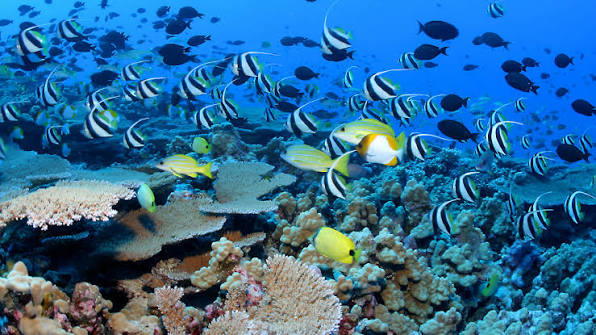
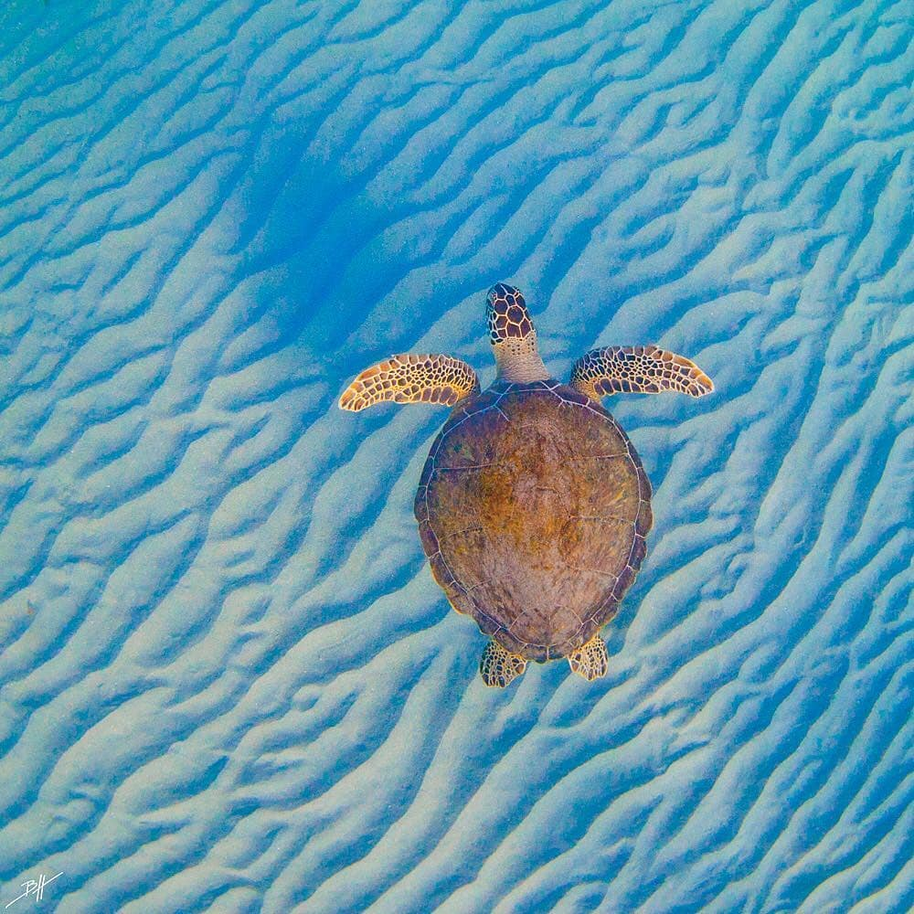
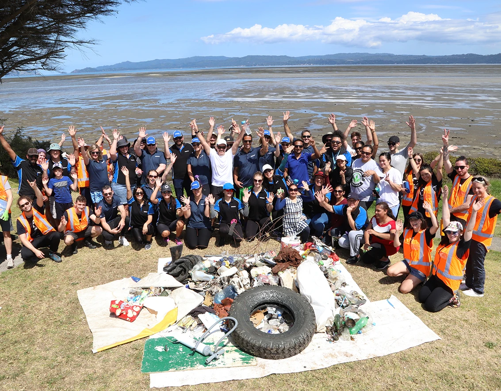
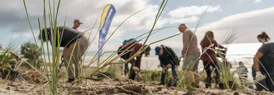

Exploring the vibrant beauty of marine ecosystems, the environmental challenges they face, and community effort in action.
Showcase what we are working to protect.

Vibrant coral reefs and marine habitats support over 25% of all sea life.
Protecting these ecosystems preserves the delicate balance of aquatic biodiversity.

Marine animals like sea turtles rely on clean, plastic-free oceans and protected nesting shores to survive and thrive.
Highlight community efforts and stewardship.

Active guardianship in action: volunteers clearing plastic pollution and marine debris from coastal shorelines before it reaches the deep ocean.

Restoration projects help stabilize shorelines, prevent soil erosion, and create natural buffers that protect marine habitats.